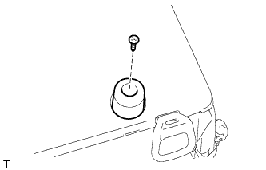
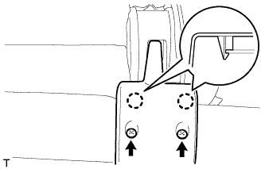
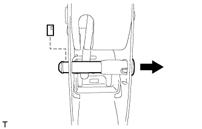
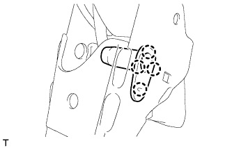
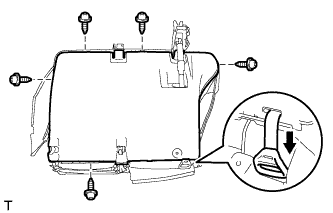
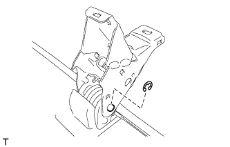

ЗАМОК ЦЕНТРАЛЬНОГО РЕМНЯ БЕЗОПАСНОСТИ ЗАДНЕГО СИДЕНЬЯ В СБОРЕ (для моделей с опускаемым сиденьем раздельного типа 60/40 с левой стороны) > СНЯТИЕ |
| 1. СНИМИТЕ ЛЕВОЕ ЗАДНЕЕ СИДЕНЬЕ № 1 В СБОРЕ |
Снимите левое заднее сиденье № 1 в сборе (Нажмите здесь).
| 2. СНИМИТЕ ОТКИДНУЮ КРЫШКУ ЛЕВОГО ЗАДНЕГО СИДЕНЬЯ |
 |
Выверните 2 винта.
С помощью съемника молдингов отцепите 2 захвата.
Переместите крышку в направлении, указанном на рисунке стрелкой, чтобы освободить направляющую, и снимите крышку.
| 3. СНИМИТЕ ОТКИДНУЮ КРЫШКУ ПРАВОГО ЗАДНЕГО СИДЕНЬЯ № 1 |
 |
Выверните 2 винта.
С помощью съемника молдингов отцепите 2 захвата.
Переместите крышку в направлении, указанном на рисунке стрелкой, чтобы освободить направляющую.
 |
Освободите 2 крепления и снимите крышку.
| 4. СНИМИТЕ ПОДУШКУ ЗАДНЕГО СИДЕНЬЯ № 2 |
|  |
Выверните винт и снимите подушку.
| 5. СНИМИТЕ ЛЕВУЮ ВНУТРЕННЮЮ КРЫШКУ ЗАДНЕГО РЕГУЛЯТОРА НАКЛОНА |
|  |
Выверните 2 винта.
Отцепите 2 захвата и снимите крышку.
| 6. СНИМИТЕ ШТИФТ РЫЧАГА ОТПИРАНИЯ НАПРАВЛЯЮЩЕЙ СИДЕНЬЯ В СБОРЕ |
|  |
С помощью отвертки снимите фиксатор.
Снимите штифт, как показано на рисунке.
| 7. СНИМИТЕ НАПРАВЛЯЮЩУЮ ШТИФТА ПЕТЛИ ЗАДНЕГО СИДЕНЬЯ |
|  |
Освободите 4 захвата и снимите направляющую штифта.
| 8. СНИМИТЕ ПЕТЛЮ ЛЕВОГО ЗАДНЕГО СИДЕНЬЯ В СБОРЕ |
 |
С помощью отвертки снимите разрезное уплотнение.
 |
Снимите штифт.
 |
С помощью отвертки расцепите 10 захватов.
|  |
Выверните 5 винтов.
Отсоедините ручку отпускания регулятора наклона от нижней крышки.
Поднимите нижнюю крышку.
 |
С помощью отвертки снимите пружину шарового шарнира стойки сиденья.
Отсоедините стойку сиденья от рамы подушки сиденья.
Снимите петлю сиденья и стойку сиденья как единый узел.
| 9. СНИМИТЕ СТОЙКУ ЗАДНЕГО СИДЕНЬЯ В СБОРЕ |
| 10. СНИМИТЕ ПЕТЛЮ ПРАВОГО ЗАДНЕГО СИДЕНЬЯ В СБОРЕ |
|  |
С помощью отвертки снимите разрезное уплотнение.
 |
Снимите штифт и петлю.
| 11. СНИМИТЕ КРАЕВОЕ УКРЕПЛЕНИЕ ПОДУШКИ ЗАДНЕГО СИДЕНЬЯ |
 |
Снимите защитный элемент с каркаса подушки.
| 12. СНИМИТЕ ПОДКЛАДКУ ЗАМКА НОЖКИ СКЛАДЫВАЮЩЕГОСЯ СИДЕНЬЯ |
 |
Снимите подушку с защитного элемента.
| 13. СНИМИТЕ ОПОРНУЮ ПРУЖИНУ ПОДУШКИ ЗАДНЕГО СИДЕНЬЯ |
 |
Снимите пружину с каркаса подушки сиденья.
| 14. СНИМИТЕ НИЖНЮЮ КРЫШКУ ПОДУШКИ ЛЕВОГО ЗАДНЕГО СИДЕНЬЯ В СБОРЕ |
Снимите нижнюю крышку.
| 15. СНИМИТЕ НАКЛАДКУ ПЕТЛИ ЛЕВОГО ЗАДНЕГО СИДЕНЬЯ № 2 |
 |
Отцепите 3 захвата и снимите обивку.
| 16. СНИМИТЕ НАКЛАДКУ ПРАВОЙ ПЕТЛИ ЗАДНЕГО СИДЕНЬЯ № 2 |
Отцепите 3 захвата и снимите обивку.
| 17. СНИМИТЕ ЗАМОК РЕМНЯ БЕЗОПАСНОСТИ ПРАВОГО ЗАДНЕГО СИДЕНЬЯ № 1 В СБОРЕ |
Отверните болт и снимите замок ремня безопасности.